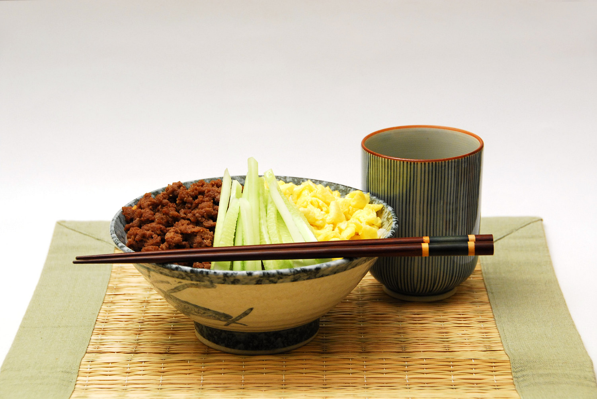

This course is perfect for beginners who want to learn the basics of
Japanese cuisine in a friendly and practical environment. Students will
prepare different traditional dishes and learn how to use ingredients,
seasonings, and cooking tools correctly.
During the course, participants will study preparation techniques for rice,
noodles, soups, grilled dishes, and simple desserts. The lessons focus on
both taste and presentation, so every student can create meals that are
authentic and visually attractive.

Hands-on practice in every lesson
What you will learn
Traditional recipes and kitchen skills
The program includes knife skills, ingredient preparation, food safety,
and the correct balance of sweet, salty, and umami flavors. Students will
also learn how to prepare popular dishes such as ramen, yakitori, sushi
basics, and homemade sauces.
By the end of the course, each participant will be able to cook several
Japanese meals independently at home. The classes are designed to be useful,
enjoyable, and suitable for people who want both practical experience and
new culinary knowledge.